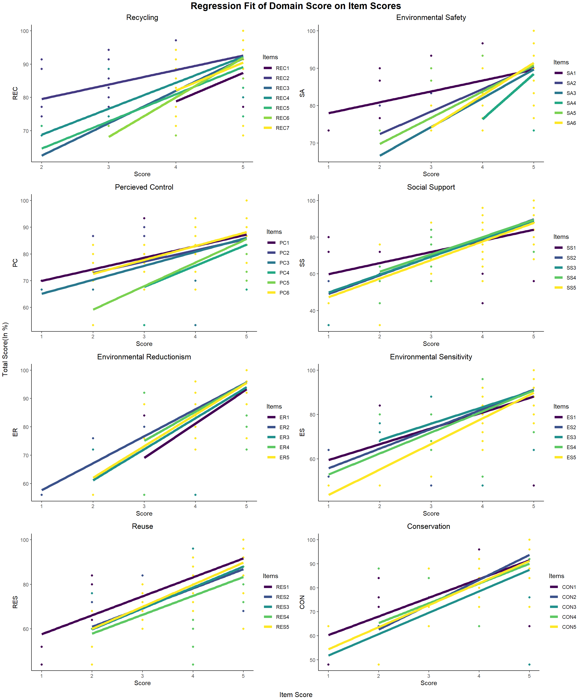

Chapter 3 Results
Here we will take a look at the structure of the data visually and through various tools available to us known as descriptive statistics and will also infer about these results. We will seek for hidden patterns, trends and dependence of variables in our data. We will examine the overall, item-wise per domain and domain-wise data and correlations. Our goal as before would be to extract as much information as possible, about pro-environmental attitude of college students of India from the response data.
3.1 Visualization
I avoid presenting tables throughout the analysis as I believe the mere numbers presented as they are provide no information by just looking at them until and unless coupled with plots and necessary remarks and have kept them to be presented in the Appendix section, if needed. I tried presenting all the results of the data directly in the plots and have kept away from presenting too much cumbersome information. Every plot is coupled with necessary remarks and insight to be drawn.
- Let’s look at the response proportion for each questions(we refer them as items). We see a very large proportion of people have filled Agree and Strongly Agree for all the items in every domain, this hints us towards the fact that our sample shows inclination towards pro-environmental attitude. We will see more on this further in the study though several other plots and analysis.
We will now look at the correlation between several variables in our data i.e. the correlation between the items and the correlation between the domains and will draw necessary insight from them. After going through the questionnaire one can think that the questions all revolve around the same topic of environmental attitude so, we expect that the items and domains should be having strong correlation among themselves. We will see the validity of this in the analysis below.
- We take a look at the correlation between all the item’s response. We observe that there is a high positive correlation between all the items from all the domains. It means that people who Agree on one item are likely to Agree with most of the other items and vice-versa. The negatively correlated items(the darker cells) are very few in number and even if they are negatively correlated the strength is very low maxing out at -0.25(only one or two items) mostly between -0.1 and 0.

- We now look at the pairwise correlation between the domain scores of individuals, we look at the results based on the gender to see how each gender’s domain scores correlate. Since, all the domains are closely related to environmental attitude of an individual it is natural to expect that if a person scores high in any one domain he is likely to have higher pro-environmental attitude overall (see later for verification of this claim from the sample) and hence have high scores in the other domains too. Thus, we see all the domain scores are highly correlated and the correlation strength are similar for both the genders. The regression line fit also reveals positive slope, which means higher score in one domain is likely to imply higher score in other domains and hence overall higher pro-environmental attitude(check further in the study to see this idea explored more). Some disparity in few lines is solely due to limited sample. Hence, our sample adheres to what we believe. The purple denotes Female and yellow denotes Male.

- Now, after seeing the correlation between the net score of the domains. We take a closer look at each domain’s items and how they correlate among themselves. We got a rough idea of it from the first correlation plot of each item. This reveals that there is all the items in each domain are highly positively correlated with each other. There is no negative correlation observed between items of the same domain, which is consistent with what is expected.

With this we have an overall idea of the correlation among items and domains as well as the proportion of subjects in the response data we collected. We will now move to the next section to infer something from the data. We will nonetheless carry on with visualizing the data wherever possible and necessary.
3.2 Inference
Here in this section, we will conduct several hypothesis testings to find out statistically significant results i.e. if there is enough evidence to say that the population we are targeting posses pro-environmental attitude using the limited sample we have.
We will also estimate several statistical measures like mean, give confidence intervals and fit probability density functions.
In the following analysis, quite obviously higher score implies more inclined towards Pro-Environmental Attitude and lower score implies the opposite i.e. less inclined to Pro-Environmental Attitude.
- We have already seen in the previous section how our sample shows inclination pro-environmental attitude i.e. the larger proportion of people agreeing to pro-environmental items. Even though mean and median give good amount of information of the average behavior of the population using the sample, a good fit of probability density functions would reveal the behavior of the entire population and what overall shape of response histogram we can expect. We see that weibull distribution fit all the scores the best out of our choice of probability density functions. Weibull distribution is similar to normal distribution but it accounts for the skewness or bias seen in the data whereas normal distribution is symmetric. The fact that Weibull fits better than normal is an evidence that the underlying distribution of the population is skewed towards higher score i.e. our population shows tendency towards high pro-environmental attitude. One important thing to note is that the observed skewness of all the domain net scores is negative implying that most of the data is skewed towards higher scores and hence higher pro-environmental attitude. We also observe high average and median score. The QQ-Plot shown beside the data histogram agrees with our fit.

- We will now look at the mean response score for each item in each domain and we have also mentioned the confidence interval for these scores. As expected from the above analysis and overall pro-environmental attitude inclined sample. The mean score for each item is more than 3(about 4 or above, which is above 80% of the total score that can be obtained out of a total of 5). The standard error(which gives the confidence interval as the 95% confidence interval is nothing but the interval [mean-1.96*se, mean+1.96*se]) is low. So, looking at the 95% C.I. for the scores we can be sure that our sample definitely gives good estimate that the mean for each item is much above 3 i.e. on an average the population is more inclined towards pro-environmental attitude.

- We see similar results as the above one from the net score in each domain. We see that that the average net score in each domain is just 5 less than than the total score that can be obtained in that domain. The small 95% confidence interval makes us believe more that the sample average is very good standing at above 75% of the total score. Hence, in every domain we see high levels of awareness and hence high pro-environmental attitude.

- We will now see whether the males and females have different take on pro-environmental attitude. To do this analysis we frame our null hypothesis that males and females on an average don’t differ in pro-environmental attitude. We test this null against a two-sided alternative. We carried a two-sample t-test and found out that we are not able to reject the null hypothesis. Hence, we conclude that there is not enough statistical evidence that male and female differ on their take in pro-environmental attitude. So, just as were doing from the start, we won’t differentiate between male and female scores. We also test the null hypothesis of the people living in joint family and nuclear family having same pro-environmental attitude against the two-sided alternative. We again find that there is not enough statistical evidence that people belonging to joint family and nuclear family differ on their take in pro-environmental attitude. We find that the average pro-environmental score of most of the domains are almost similar i.e. conducting the one-factor ANOVA test for equality of means we find that there is not enough statistical evidence to reject the fact that the means of all the domain scores are different. I strongly believe that these tests are limited by the sample size and if we had access to a bigger sample the means of all the domain scores in a single one-factor ANOVA test would come out to be same.

With this we conclude the inference section of our study. We will use the insights gained from this section and the previous section to guide our data analysis further in the next sections.
3.3 Modeling
In this section, we will see the dependence of one domain score on the other domain scores, the item scores on the domain scores and domain scores on the total scores. This will help us identify which domain score is the most differentiating so as to get higher pro-environmental scores. It is important because those are the domains we need to improve so as to achieve better total scores. We won’t be fitting complicated black box models as our goal is not to predict the pro-environmental attitude of a student rather we want to draw inferences from the models. Linear Models fit perfectly in that sense.
- First, we start by looking at the domain score’s dependence on the other domain scores. This will help us get an idea of how knowing that one person scores in all the domains except one will perform in the left out domain. From the coefficient forest plot below we see that most of the coefficients in the significant linear model have high positive values except one(which on inspecting the 95% C.I. indicated by the horizontal line across each estimate reveals it to be insignificant with high p-value). Thus, if a person has high scores in all the domains, it is expected and observed that he will have high scores in the rest of the domain. We also observe all the other domain scores explains the variability of RES, REC, CON and ER domain score(looking at the model R-squared values, these are above 60%) very well. It also gives us important information that if we can foster education among students on the domains they are less aware of we can expect them to have improved pro-environmental score on the other domains as well. Thus, improving the awareness with special focus on SS, ES, SA and PC is needed because improving awareness on REC, REC, CON and ER won’t improve pro-environmental attitude in these domains(with low model R-square).

- Let’s look at the dependence of the item scores on the domain score. We will look at it in two ways to better understand what’s going on. We below fit a linear regression model of each item on the domain score, so as to understand given a particular total pro-environmental score in a particular domain, what is the expected scores in each of the items of that domain. We observe increase in any item score increases the overall score in that domain(from the correlation graphs among items we know one item score increases implies other scores are likely to be high too). We observe an issue with 3 items i.e. REC2, PC1, SA1 as even when the domain score is 100%(which means all item scores for that individual must be 5) our fitted regression line predicts that item score to be 4 or slightly less than 4 this means that the students even with high pro-environmental attitude find it difficult to agree with these items and on looking at these items we understand that there is need for education and awareness on these items i.e. imparting education on upcycling old products into new and useful items(REC2), on the cost and issues of safe disposal of waste products(SA1) and managing waste around an individuals surroundings(PC1). We also get an idea of which items are generally agreed by most of the people(even the ones with lower pro-environmental score) i.e. if we draw a vertical line in each of the plots we will get the score of each item predicted at that level of domain awareness. All the items in SS and ES have same predicted scores whereas in REC, REC1 is the highest scored; in SA, SA4 is highest scored; in PC, PC4 is highest scored; in ER, ER1 is highest scored; In RES, RES4 is highest scored and in CON, CON3 is highest scored. So, most of the students at all level of domain awareness(domain pro-environmental score) agrees that recycling is useful, proper precaution for safe disposal of waste/toxic chemical should be taken, environmental conservation is everyone’s responsibility, we can save water by closing the taps when we brush and conservation can help in creating a greener planet for future.

- After we have seen the above insight, it is quite natural to ask how can we improve on the overall domain score by imparting education particular to each item. We will answer that now by looking at the dependence of Total Score in each domain on the item scores that compose it. Obviously, we see as expected that there is positive slope as increasing item score increases domain score trivially. One important thing to notice is that agreeing completely or scoring even full in one item doesn’t imply that the overall domain score is near full, it maxes out at about 90% for almost all the domains, which reinforces the fact that better broad knowledge regarding all sorts of items that comprises a domain is needed to improve the domain level awareness to near 100%. We see that is the slope of REC2, SA1, PC1, PC2, PC3, PC6, SS1 are lower compared to rest of the items which implies as of now(from our sample’s level of environmental education) that improving the take on these items would show very less increase in domain score. Thus, we need to focus in imparting education regarding upcyling, cost of disposal of waste, maintaining our surroundings to be waste free, believing in individual actions can improve climate.

- Finally, we take a look on the same analysis we saw above for items conducted on domain level awareness and overall pro-environment score. We breakdown the predicted composition of the total pro-environmental attitude(overall score) in terms of the domain scores. We see that students have higher contribution in their overall pro-environmental attitude from the domain awareness of environmental reductionism. Apart from Environment Reductionism all the other domain scores maxes out at around 90% when the total score is 100%(i.e. all the domain scores should be nearer to 100%). Hence, we need awareness focusing on all the other domains of recycling, environmental safety, perceived control, social support, environmental sensitivity, reuse and conservation. It is observed that students scored lesser in social support, environmental safety and perceived control compared to other domains.
- So, as a result to see how the dependence of total scores are on the domain scores, mainly the slope will be important for us to analyse and increasing the slope would be a goal though our environmental education. It is again focused that the total score maxes out at about 90% even when all domain scores are 100%, which implies further awareness in all the domains is required. The slopes of SS and ES are low in among students so education is very important so as to increase the slope for these domains on total score is needed